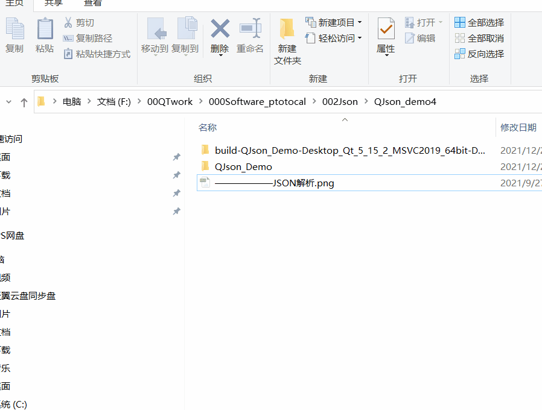

Qt中使用QJson类来解析Json数据
json格式介绍
json主要是三种格式：object（对象）、array（数组）、value（值）。
他们的作用：
QJsonArray
封装 JSON 数组
QJsonDocument
读写 JSON 文档
QJsonObject
封装 JSON 对象
QJsonObject::iterator
用于遍历QJsonObject的STL风格的非const遍历器
QJsonParseError
报告 JSON 处理过程中出现的错误
QJsonValue
封装 JSON 值
JSON解析流程
JSON解析的流程如下：
A、将对应的字符串生成QJsonDocument对象
B、判断QJsonDocument对象是QJsonObject还是QJsonArray
C、如果是QJsonObject类型，获取一个QJsonObject对象，然后根据QJsonObject的API函数进行解析
D、如果是QJsonArray类型，获取一个QJsonArray对象，然后根据QJsonArray的API函数进行解析
E、根据获取的QJsonObject或QJsonArray取得QJsonValue类型的数据
F、迭代分解数据获取各个值
1.object对象
object对象是使用大括号{ }括起来的部分，每一个{}都代表一个独立的对象。
每个对象都是由一个或者多个无序的键值对组成的，键值对——名称/值，名称的后面跟着一个“:”，名称之间使用“,”分隔。
如：
//上下两个大括号表明这是一个object
{
//里面由一个或多个 名称/值 对组成，之间用，分隔
"name": "Xiao Ming",
"age": 18,
"sex": "male"
}
2.array数组
array数组是使用中括号[ ]括起来的那部分。
数组是一组有序的值的集合，值之间使用“,”进行分隔。
如：
[
"data": 1,
"data": 2,
"data": 3
]
注意，这里面说的是“值”，这个值是一个比较抽象的概念，不是简单的一个字符串或者是一个数字，下面介绍值。
3.value值
这个值是一个抽象的概念，并不是一个确定的类型，可以是简单的字符串或者是数字，也可以是上面介绍的对象、数组，甚至还可以各种深层次嵌套的东西。
值（value）可以是双引号括起来的字符串（string）、数值(number)、true、false、null、对象（object）或者数组（array）。
这些结构可以嵌套。
如：
{
"name":"Xiao Ming",//这是字符串
"age":18,//这是数字
"grade":[//这里面的值是“对象的数组”，甚至可以无限嵌套下去
{
"name":"English",
"score":80
},
{
"name":"Math",
"score":90
},
{
"name":"Chinese",
"score":100
}
]
}
利用QJson操作json格式数据如下：
Qt下操作json格式的数据
第一部分介绍了json的结构，分为对象object、数组array、值value。
鉴于此，在Qt下有三种对于json数据的基本操作，分别为：QJsonObject、QJsonArray、QJsonValue。
以及对于解析错误进行描述的类：QJsonParseError（Qt解析错误）。
QJsonObject
因为对象object中有值value，而值value又是一个名称/值对，所以对于QJsonObject来说，可以直接使用QJsonObject::value()来获得指定字段的值。
另外的功能见下图，其中使用最多的就是QJsonObject::value()这个函数：
QJsonValue
因为值value基本上可以是任何的类型，所以值value也可以是对象object、数组array，因此对于QJsonValue而言，可以使用QJsonValue::toObject()，和QJsonValue::toArray()将值value转化为对象object或者是数组array。
另外，值value也可以转化为其他的类型，详细内容见下图：
OJsonArray
对于数组array而言，其实可以把它当成Qt中的QVector看待，可以执行添加、删除、插入，还进行了operator操作符的重载操作，拿我来说，我就喜欢直接用下标的方式来进行操作，因为下标在没有这个字段的时候，会自动执行插入操作，相当方便。
具体的函数如下图所示：
总结
掌握json的三个重要结构：对象object、数组array、值value。
Qt操作的三个重要组成：QJsonObject、QJsonArray、QJsonValue
Qt的补充操作：QJsonParseError错误信息类、QJsonDocument文件相关类
Qt操作的三个重要组成：QJsonObject、QJsonArray、QJsonValue
Qt的补充操作：QJsonParseError错误信息类、QJsonDocument文件相关类
JSON文件格式必须为UTF-8（非UTF-8 with BOM）,UTF-8 with BOM 即为UTF-8 前加了BOM标识，会致使解析失败，报错内容非法,这时候就将文件保存为UTF-8就行了。
QJsonDocument类提供了读写JSON文档的方式，我们可以通过该类的方法QJsonDocument::fromJson()将一个JSON文档转换成QJsonDocument类，或者通过QJsonDocument::toJson()和QJsonDocument::toBinaryData()函数将一个QJsonDocument类转换为QByteArray，这样我们就可以很轻松地将其写入文件。
QJsonArray封装了JSON中的数组。
QJsonObject封装了JSON中的对象。
QJsonValue封装了JSON中的值。
QJsonParseError 用于报告JSON解析中的错误类型。
另外，就是值value的各种嵌套了，操作上也是这样，代码的读取与写入都是各种值的嵌套操作，只要遵循两者间通信的协议即可，其余可即兴发挥
代码下载地址：
https://gitee.com/zzzbbb001_admin/QJsonParse.git

© All rights reservedDesign: 825772667@qq.com